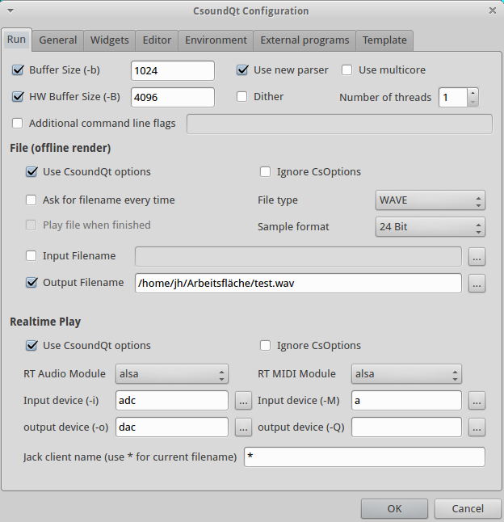
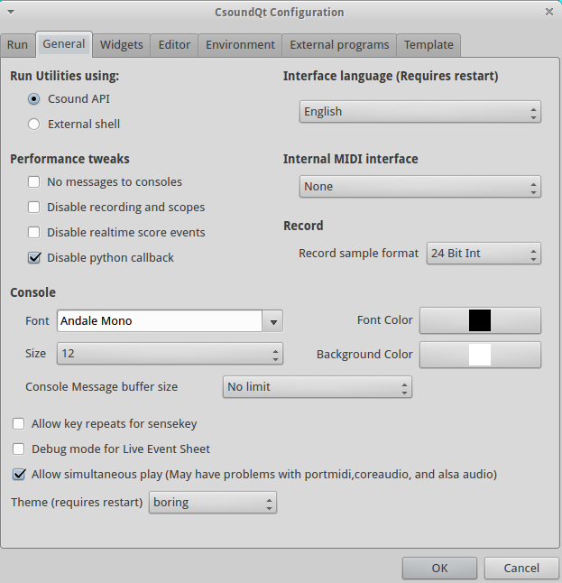
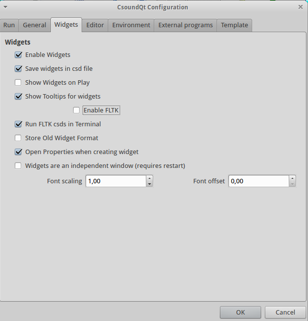
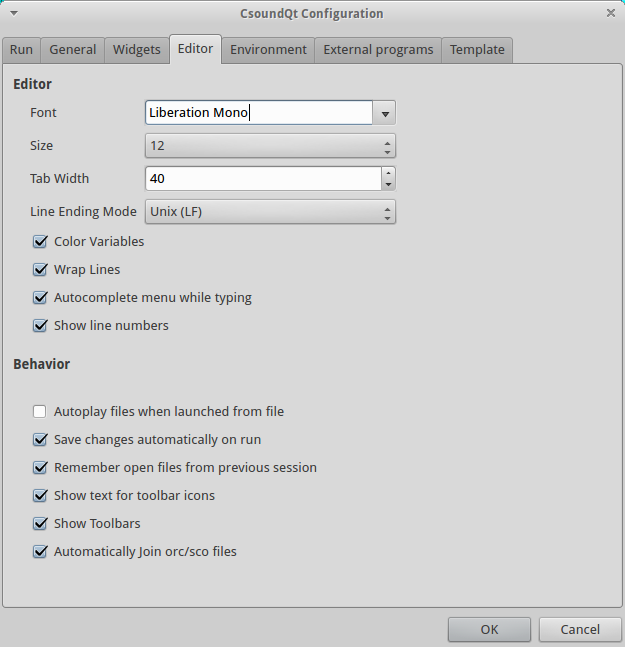
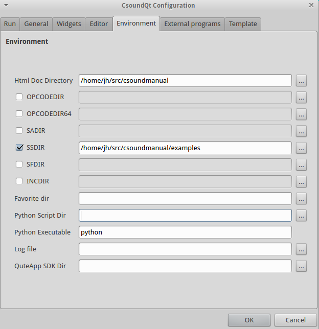
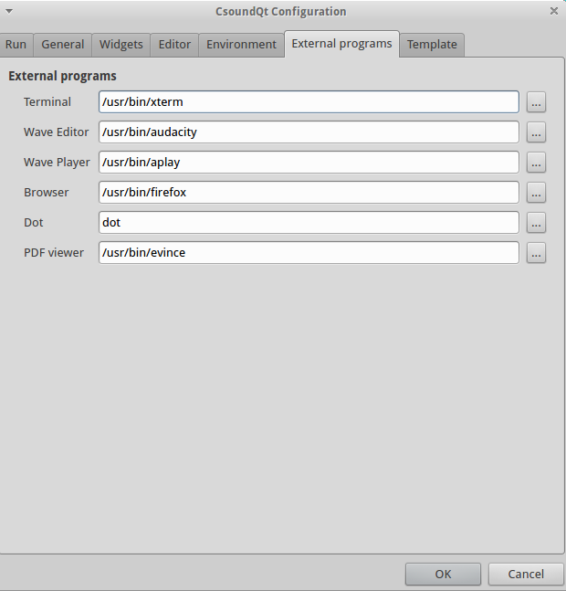
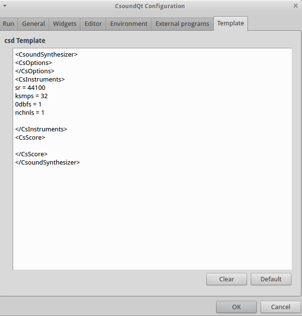

Configure
CsoundQt gives easy access to the most important Csound options and to many specific CsoundQt settings via its Configuration Panel. In particular the 'Run' tab offers many choices which have to be understood and set carefully.
To open the configuration panel simply push the 'Configure' button. The configuration panel comprises seven tabs. The available configurable parameters in each tab are described below for each tab.
Run¶

The settings at the top of the “Run” tab allow the user to define the command-line flags with which Csound is invoked.
Buffer Size (-b)
This defines the software buffer size (corresponding with the -b flag).
If you do not tick, CsoundQt will use the defaults.[1]
If you tick to enter an own value, these are some hints:
- Always use power-of-two values.
- Usually the ksmps block size is 1/4 or 1/2 of the software buffer size. If you use live input and output, it is most effective to set the software buffer size to an integer multiple of ksmps ("full duplex audio").
- Use smaller values (e.g. 128) for live performance (in particular with live input), as it will reduce the latency. Use larger values (e.g. 1024) for other cases, for instance playing sound files.
HW Buffer Size (-B)
This defines the hardware buffer size (corresponding with the -B flag).
If you do not tick, CsoundQt will use the defaults.[2]
If you tick to enter an own value, these are some hints:
- Always use a multiple integer of the software buffer size. A common relation is: Hardware Buffer Size = 4 * Software Buffer Size.
- The relation between software buffer size and hardware buffer size depends on the audio module.[3]
Use new parser
This option has been introduced during the transition between the old and the new parser (which was between Csound 5.13 and 5.14), and is now obsolete.
Use multicore /Number of threads
This option is only available when the new parser is enabled, and corresponds with the -j flag. For instance, ‘-j 2‘ will tell Csound to use 2 parallel processors when possible.
You should use this option with care. It may be also worth to state that using multiple threads will not in each case improve the performance. Whether it does or not depends on the structure of the csd file you run.
Dither
Switches on dithering (the --dither flag) for the conversion of audio from the internal resolution (now mostly 64 bit double precision float) to the output sample format (see below).
Additional command line flags
This enables the user to add any additional options not listed here. Only use if you know what you are doing!
File (offline render)¶
These options determine CsoundQt's behaviour if you render to file (by pushing the Render button or selecting the menu item Control -> Render to file).
Use CsoundQt options
Tick this to activate the CsoundQT options configured here.
Ignore CsOptions
Use this to ignore the option embedded in the section of the csd files you are rendering.
NOTE that care must be taken to avoid inconsistencies between CsOptions and CsoundQt options. For beginners, it is recommended to tick "Ignore CsOptions" when the CsoundQT options are enabled. If you are a more experienced user, you can leave this unchecked to allow some additional options like -m128 to reduce Csound's printout.
NOTE that if you have checked "Use CsoundQt options" and have not checked "Ignore CsOptions", in the case of a conflict between both the CsoundQt options set in the configure panel will have the priority.
Ask for filename every time
Ask for a filename to render the performance to.
File type / Sample format
Use this to set the output file format.
Input Filename
Corresponds with the -i flag (Input soundfile name).
Output Filename
Corresponds with the -o flag for defining the output file name to which the sound is written.
Realtime Play¶
These options determine CsoundQt's behaviour if you push the Run button (or select the menu item Control -> Run Csound).
Use CsoundQt options
Tick this to activate the CsoundQT options configured here.
Ignore CsOptions
Use this to ignore the option embedded in the section of the csd files you are running.
NOTE that care must be taken to avoid inconsistencies between CsOptions and CsoundQt options. For beginners, it is recommended to disable CsOptions when the CsoundQT options are enabled. If you are a more experienced user, you can leave this unchecked to allow some additional options like -m128 to reduce Csound's printout.
NOTE that if you have checked "Use CsoundQt options" and have not checked "Ignore CsOptions", in the case of a conflict between both the CsoundQt options set in the configure panel will have the priority.
RT Audio Module
This option is very much dependent on your operating system.
In case you experience crashes or have problems with the real time performance, it is worth to try another module.
The most common choices on the different operating systems are probably:
- For Linux, use alsa or jack.
- For OSX, use coreaudio or portaudio.
- For Windows, use portaudio.
Input device
This option selects the device you are using for real-time input, for instance from a microphone. (Note that you must have ticked "Use CsoundQt options" if you want Csound to use your selection.)
The usual (and most stable) choice here is adc. In this case Csound will use the device which has been selected as standard by your operating system.
If you want to use another device instead, click on the button at the right side. You will find a list of available devices and can choose one of them.
If you don't have realtime input, choose "no input".
NOTE: The portaudio module usually requires the same number of input and output channels. Some computers have 2 output channels but a microphone with only 1 input channel. In this case you will get the error:*** PortAudio: error: -9998: Invalid number of channels. Usenchnls_i = 1in your csd header in this case.
Output device
This option selects the device you are using for real-time output. (Note that you must have ticked "Use CsoundQt options" if you want Csound to use your selection.)
The usual (and most stable) choice here is dac. In this case Csound will use the device which has been selected as standard by your operating system.
If you want to use another device instead, click on the button at the right side. You will find a list of available devices and can choose one of them.
RT MIDI Module
This option is very much dependent on your operating system.
In case you experience problems with MIDI, it is worth to try another module. In case you do not use any MIDI at all, select none to get rid of one possible source of trouble.
The most common choices on the different operating systems are probably:
- For Linux, use alsa or portmidi.
- For OSX, use coremidi or portmidi.
- For Windows, use portmidi.
Input device
This option selects the device you are using for real-time MIDI input. (Note that you must have ticked "Use CsoundQt options" if you want Csound to use your selection.)
The usual choice here is a. In this case Csound will use all MIDI devices.
In case your RT MIDI Module does not support this option, click on the button at the right side. You will find a list of available devices and can choose one of them.
Output device
This option selects the device you are using for real-time MIDI output. (Note that you must have ticked "Use CsoundQt options" if you want Csound to use your selection.)
Jack client name
This option specifies the name for communicating with a Jack audio client. The default '*' means 'all' clients.
General¶

Run Utilities using:¶
This should be self-explanatory and is only meaningful if you run any of the Csound Utilities like sndinfo or the FFT analysis tool pvanal.
Interface language¶
Self-explanatory.
Performance tweaks¶
These are very important options in case you use CsoundQt for real-time usage and experience performance problems.
No messages to consoles
Tick this to disable any printout.
Disable recording and scopes
This refers to CsoundQt's internal Record facility and to the Scope widget.
Disable realtime score events
If you check this, you will not be able to send any live score event, for instance from a Button widget or the Live Event Sheet.
Disable python callback
If you do not use CsoundQt's internal Python scripting facility in real-time, you should check this to improve the overall performance.
Internal MIDI interface¶
The "Internal MIDI interface" is the MIDI device from which MIDI control messages are sent directly to the CsoundQt widgets. Have a look, for instance, in the properties of a Slider widget to see the MIDI CC number and the MIDI Channel to be specified.
Note that this does not set the input MIDI device for Csound itself (which has be explained above in Run -> RT MIDI Module -> Input device).
Record sample format¶
Defines the bit depth of the audio file to which CsoundQt records its real-time output, when using the Record button (or the 'record' option from the Control menu). For most cases 32bit float or 24bit formats are recommended. The former is particularly useful as it can hold ‘clipped‘ sample values, which can be later normalised.
Console¶
You can choose here how the Csound output console looks like.
Control message buffer size
If you do not not want to prevent CsoundQt from printing anything to the console at all (see above) but want to reduce this output for performance's sake, you can set here a limit.
There are some mixed options at the bottom of this tab:
Allow key repeats for sensekey
If you press a key on your computer for a long time, the key is repeated. This may or may not be useful for the sensekey opcode and can be decided here.
Debug mode for Live Event Sheet
Self-explanatory.
Allow simultaneous play
If checked, it allows you to play more than one csd tab simultansously.
Theme
Allows you to choose between the traditional ("fun") CsoundQt look, and a more serious ("boring") one.
Widgets¶

Enable Widgets
If not checked, you cannot use any of CsoundQt's widgets.
Save Widgets in csd file
Each csd file has a section for widgets and presets. These sections are hidden when you open your csd file in CsoundQt, but are visible in any text editor. So if you do not have checked this option, you will not see any of your widgets the next time you open your csd. So, only useful if you want to export a csd without the widget tags.
Show Widgets on play
If checked, the widget panel will pop up each time you push the Play button.
Show tooltips for widgets
Enables a useful feature which lets you see the channel name of a widget if you stay a moment on it with the computer mouse.
Enable FLTK
FLTK means a built-in (and somehow outdated) method of using widgets in Csound. As these widgets could conflict with CsoundQt's own widgets, you will usually uncheck this.
Run FLTK csds in Terminal
This lets you execute csd files which contain FLTK widgets without conflicting with CsoundQt.
Store Old Widget Format
CsoundQt started in using the file format for widgets from Matt Ingall's 'Mac Csound' for the sake of compatibility. Later it decided to use an own format; mainly for the build-in presets facility. When you check this option, CsoundQt will save the old Mac Csound widgets format in addition to the new proper CsoundQt widget format.
Open properties when creating widgets
Usually you will this have ticked, to enter your channel name and other properties when you create a widget.
Widgets are an independent window
CsoundQt consists of many subwindows except the main Editor panel: the Console, the Help (Manual), the Inspector, and so on. If you check this option, the widget panel will not be considered as one of them, but as independent window. This means that you cannot dock it by double-clicking on the top, like all the other subwindows, but it may have advantages anyhow, depending on your operating system and your configuration.
Font scaling / Font offset
Affects the way the fonts are shown for instance in a Label widget.
Editor¶

Only one option needs some explanation:
Autoplay files when launched from file
If ticked, a csd file will play immediately when opened.
Environment¶

There are some important settings here, along with some only for developers. We will focus on the options which can be important for all users.
Html doc directory
This refers to the folder containing the Canonical Csound Manual. If you choose View -> Help Panel, and see nothing but a message like "not found!", you will have to set here the directory for the manual. Click on the browse button on the right side, and choose the folder where it is on your computer.
SADIR (Sound Analysis Directory)
You can set here the directory in which Csound will seek for analysis files like .pvx files.
SSDIR (Sound Sample Directory)
This is very useful to set a folder for sound samples, for instance used by diskin. You can then refer to the sample only by name.
SFDIR (Sound File Directory)
To specify a directory for output files. This is usually be done in the 'Run' tab, as explained above (Output Filename).
INCDIR (Include Directory)
Specifies a directory for files which all called by the #include statement.
Favorite dir
Specifies a directory which will then appear under the menu as 'Favorites'.
Python script dir
Usually you will leave this empty so that CsoundQt links to the Python Scripts it comes with. Only specify if you build CsoundQt or want to change the scipts folder.
External Programs¶

Should be self-explanatory. 'Dot' is the executable from www.graphviz.org. It is used in CsoundQt for the Code Graph Viewer (View -> View Code Graph).
Template¶
This tab is useful as it allows the user to define a default template for new CSDs. Something like this can be a great timesaver:

- According to the relevant manual page, the defaults are 256 for Linux, 1024 for OSX and 4096 for Windows.
- According to the manual, 1024 for Linux, 4096 for OSX and 16384 for Windows.
- In the explanation of Victor Lazzarini (mail to Joachim Heintz, 19 march 2013):
- For portaudio, -B is only used to suggest a latency to the backend, whereas -b is used to set the actual buffersize.
- For coreaudio, -B is used as the size of the internal circular buffer, and -b is used for the actual IO buffer size.
- For jack, -B is used to determine the number of buffers used in conjunction with -b , num = (N + M + 1) / M. -b is the size of each buffer.
- For alsa, -B is the size of the buffer size, -b is the period size (a buffer is divided into periods).
- For pulse, -b is the actual buffersize passed to the device, -B is not used.
In other words, -B is not too significant in 1), not used in 5), but has a part to play in 2), 3) and 4), which is functionally similar.